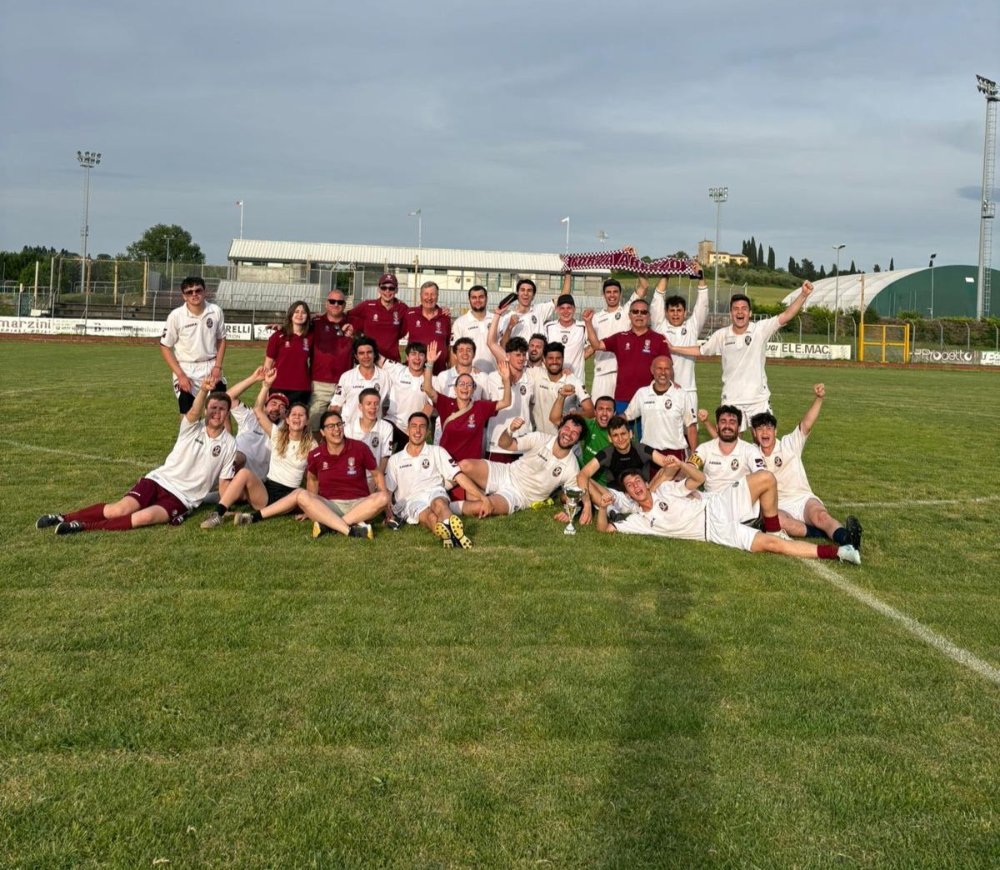
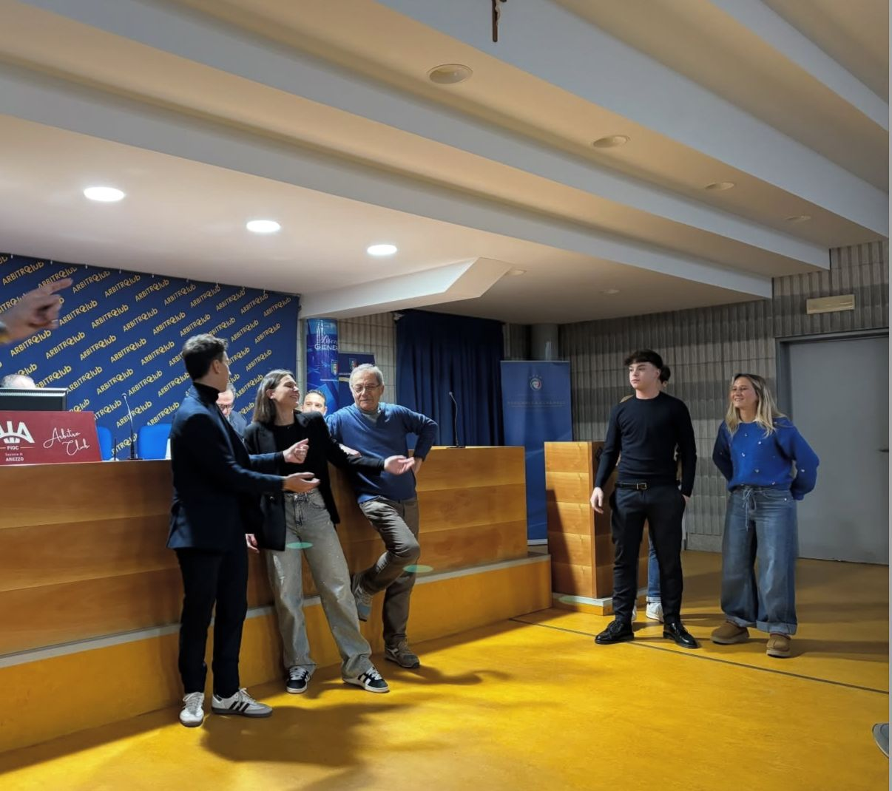
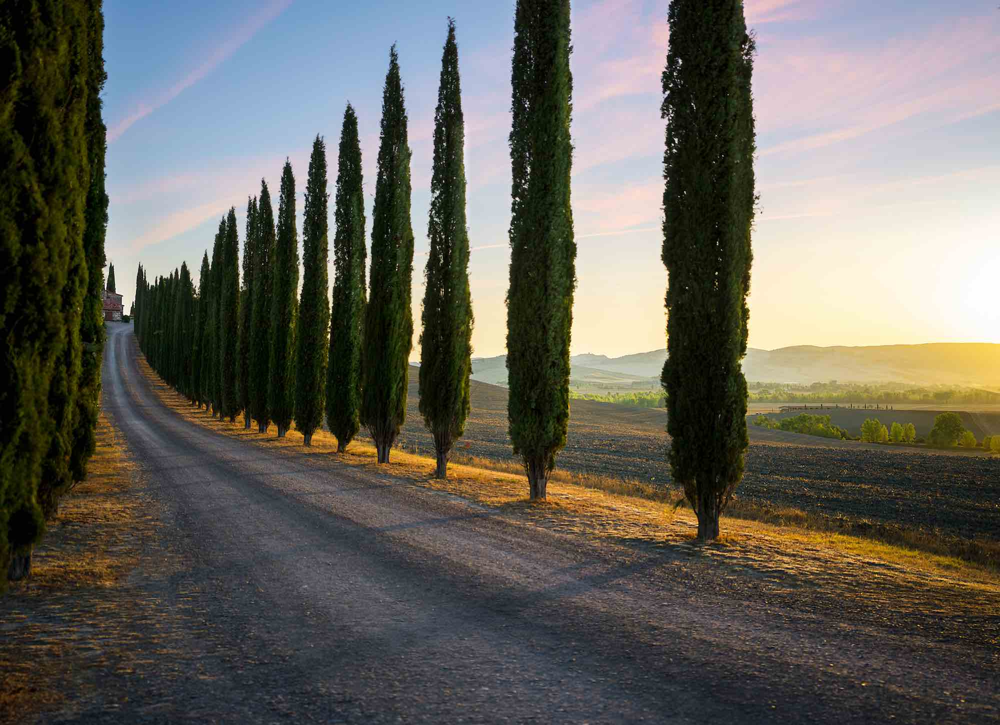

GIOVEDI’:
vivere la sezione
"La sezione non è solo un gruppo di colleghi.
È la tua famiglia arbitrale, il posto dove si cresce, dove si condividono successi e difficoltà, dove si diventa parte di qualcosa di più grande.
Ogni riunione tecnica è un’occasione per ritrovarsi, per imparare gli uni dagli altri e per sentirsi supportati.
Qui si analizzano partite, si discute di regole, si raccontano storie di campo.
Ma soprattutto, si rafforzano i legami, si crea un senso di appartenenza che va oltre il fischietto e la divisa.
È il luogo dove l’arbitraggio diventa condivisione, amicizia, crescita.
Ogni scambio di idee, ogni domanda, ogni aneddoto ti rende più preparato, più consapevole, più pronto.
E in questa famiglia, ognuno trova il proprio posto, la propria voce e il proprio valore."
È la tua famiglia arbitrale, il posto dove si cresce, dove si condividono successi e difficoltà, dove si diventa parte di qualcosa di più grande.
Ogni riunione tecnica è un’occasione per ritrovarsi, per imparare gli uni dagli altri e per sentirsi supportati.
Qui si analizzano partite, si discute di regole, si raccontano storie di campo.
Ma soprattutto, si rafforzano i legami, si crea un senso di appartenenza che va oltre il fischietto e la divisa.
È il luogo dove l’arbitraggio diventa condivisione, amicizia, crescita.
Ogni scambio di idee, ogni domanda, ogni aneddoto ti rende più preparato, più consapevole, più pronto.
E in questa famiglia, ognuno trova il proprio posto, la propria voce e il proprio valore."


organizzazione della trasferta
"Organizzare la trasferta è parte fondamentale della partita.
Non è solo un viaggio: è la fase in cui prepari il terreno per dirigere al meglio la tua gara.
Pianifica ogni dettaglio: orario di partenza, sistemazione, ritrovo con gli assistenti, studio del campo.
Meno sorprese ci sono, più puoi concentrarti sul gioco.
La chiave è essere pronti a qualunque inconveniente."
Non è solo un viaggio: è la fase in cui prepari il terreno per dirigere al meglio la tua gara.
Pianifica ogni dettaglio: orario di partenza, sistemazione, ritrovo con gli assistenti, studio del campo.
Meno sorprese ci sono, più puoi concentrarti sul gioco.
La chiave è essere pronti a qualunque inconveniente."
